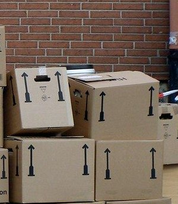
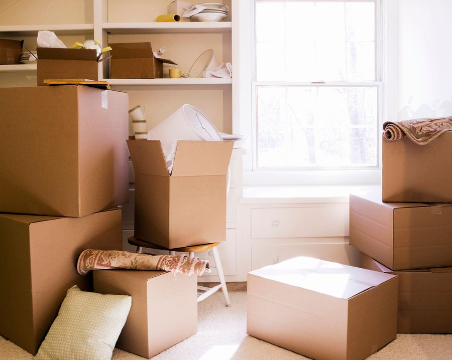

Eşya listesi
Salon, mutfak, yatak odası… Oda oda sayın; koltuk, yatak, beyaz eşya ve koli adetleri hazır bir mesaja dönüşsün.
Listeyi oluşturAvcılar · Tahtakale
Evden eve ve ofis taşımanızı koli koli planlayın. Eşyanızı oda oda sayın, listeyi WhatsApp'tan gönderin; tarihi, katı ve asansör durumunu birlikte konuşalım.
Kaç koli, kaç parça eşya, kaçıncı kat? Bunları baştan bilmek hem sizin hem de taşıyan ekibin işini kolaylaştırır. Bu sitede iki araç ve bir kısa yol var.
Salon, mutfak, yatak odası… Oda oda sayın; koltuk, yatak, beyaz eşya ve koli adetleri hazır bir mesaja dönüşsün.
Listeyi oluşturBir ay öncesinden taşınma gününe işaretlenebilir kontrol listesi, oda oda paketleme ipuçları ve yazdırılabilir koli etiketi.
Rehberi açListeyi beklemeden de arayabilirsiniz. Haftanın her günü açık; Çarşamba günleri 24 saat.
Hemen araAşağıdakiler nakliyat işlerinde en sık sorulan başlıklar. Hangisinin nasıl ve hangi tarihte yapılabileceğini telefonda ya da WhatsApp'ta konuşalım.
Paketleme, taşıma ve yeni evde yerleştirme için planınızı anlatın.
Masa, dosya dolabı ve bilgisayarlar için uygun gün ve saati sorun.
Kırılacak eşyaların nasıl paketleneceğini ve malzemeyi sorun.
Gardırop, baza gibi kurulu eşyalar için nasıl yapılacağını sorun.
Buzdolabı, çamaşır ve bulaşık makinesi için hazırlığı birlikte konuşalım.
Tek bir dolap ya da birkaç koli için de yazabilirsiniz.
KULENİZ KAÇ KOLİ?
En çok sorulan beş kalemi buradan sayın, kuleniz yükselsin. Sayılar yalnız bu cihazda saklanır; eşya listesinde diğer odaları ekleyip tamamlarsınız.
Taşıma kolilerindeki simgeler kim taşırsa taşısın aynı şeyi söyler. Kendi kolilerinizi hazırlarken bunları kalınca bir kalemle çizebilir ya da rehberdeki etiket aracıyla yazdırabilirsiniz.

Temsili görselİşareti kolinin yalnız üstüne değil, en az iki yan yüzüne de çizin: koliler üst üste dizilince üst yüz görünmez.

Temsili görselTaşınma öncesi aklınıza takılanlar. Cevabını burada bulamadığınız her şeyi arayıp sorabilirsiniz.
Sorunuzu sorunNakliyatta fiyatı genellikle eşya miktarı, çıkış ve varış katları, binalarda asansör olup olmadığı, mesafe, paketleme ihtiyacı ve söküm-kurulum gereken eşyalar belirler. Her ev farklı olduğu için bu sitede fiyat yazmıyoruz; eşya listesini gönderin ya da arayın, bilgi verelim.
Pazartesi, Salı, Perşembe, Cumartesi ve Pazar 07:00–23:00, Cuma 07:30–23:00 arası. Çarşamba günü 24 saat açık. Taşıma gününü ve saatini görüşürken birlikte planlayın.
Çıkış ve varış semti, iki binanın kat bilgisi, asansör olup olmadığı, düşündüğünüz tarih ve eşya listesi iyi bir başlangıçtır. Eşya listesi bunları tek mesajda toplar.
Elbette. Taşınma rehberinde koli kuralları ve oda oda paketleme ipuçları var. Paketleme desteği istiyorsanız listede belirtin ya da sorun; nasıl yapılacağını konuşalım.
Yazın. Eşya listesinde yalnız o eşyayı işaretleyip gönderebilirsiniz; uygunluk için bilgi verelim.
Büyük gardıroplar ve bazalı yataklar çoğu zaman kapıdan, merdivenden ya da asansörden geçmek için sökülür. Eşya listesinin "söküm ve kurulum" kısmında işaretleyin; nasıl yapılacağını sorun.
Genellikle iyi olur. Asansörün taşıma sırasında kullanılacağını ve aracın bina önüne yanaşacağını önceden bildirmek komşularla sorun yaşamamanızı sağlar. Bazı sitelerde taşınma saatleri yönetim kurallarıyla sınırlıdır; önceden sorun.
ADRES
Kule Nakliyat
Tahtakale, Hicret Sk. 37 D:aire 1,Her gün açık · Çarşamba 24 saat
| Pazartesi | 07:00–23:00 |
|---|---|
| Salı | 07:00–23:00 |
| Çarşamba | 24 saat açık |
| Perşembe | 07:00–23:00 |
| Cuma | 07:30–23:00 |
| Cumartesi | 07:00–23:00 |
| Pazar | 07:00–23:00 |